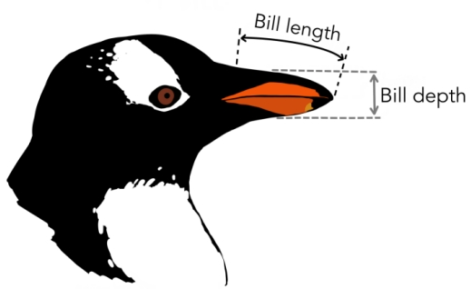
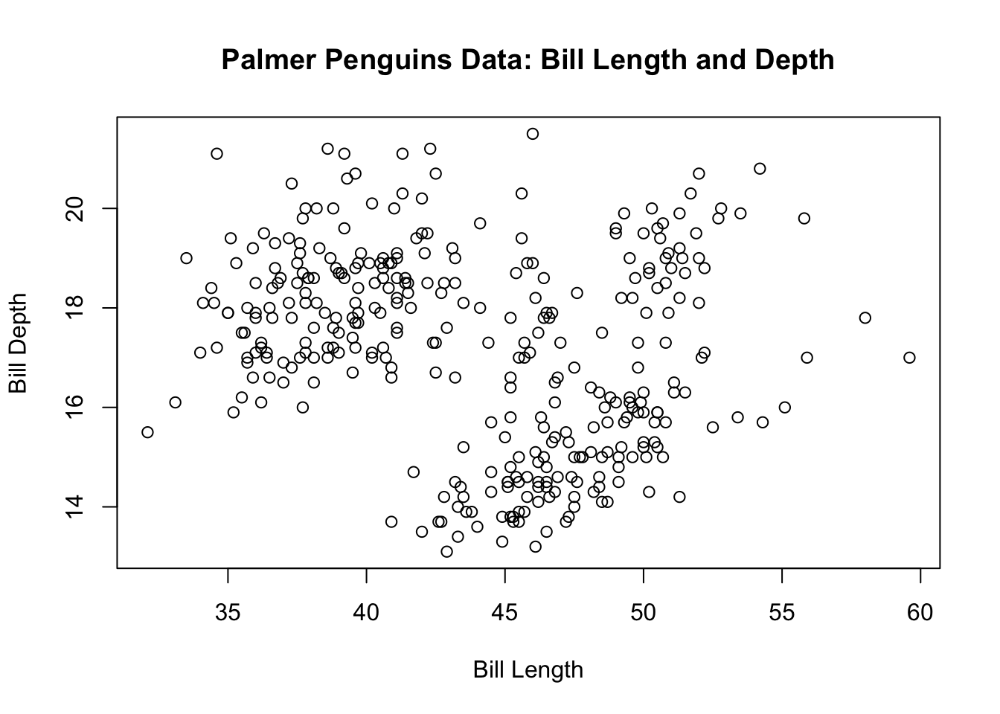
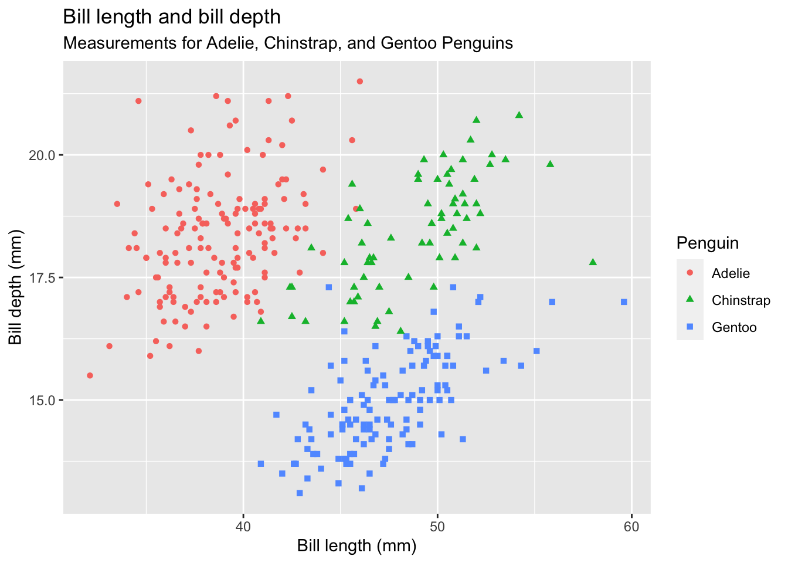
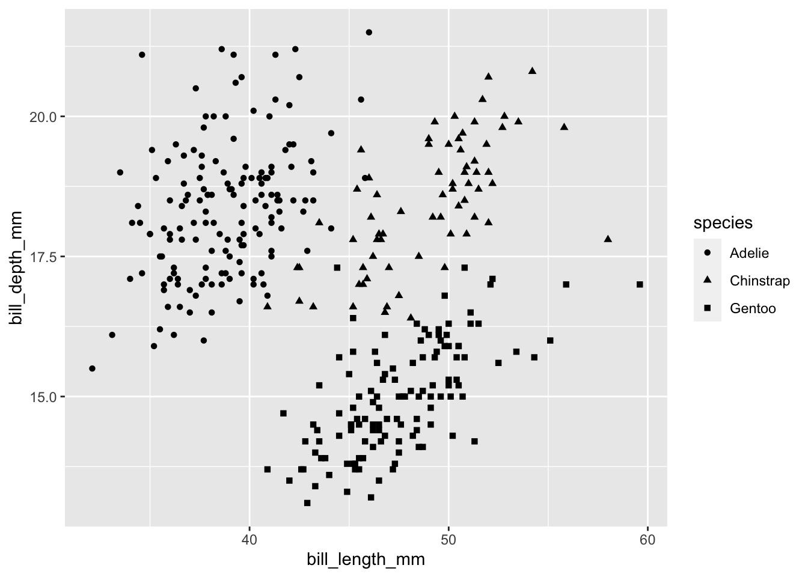
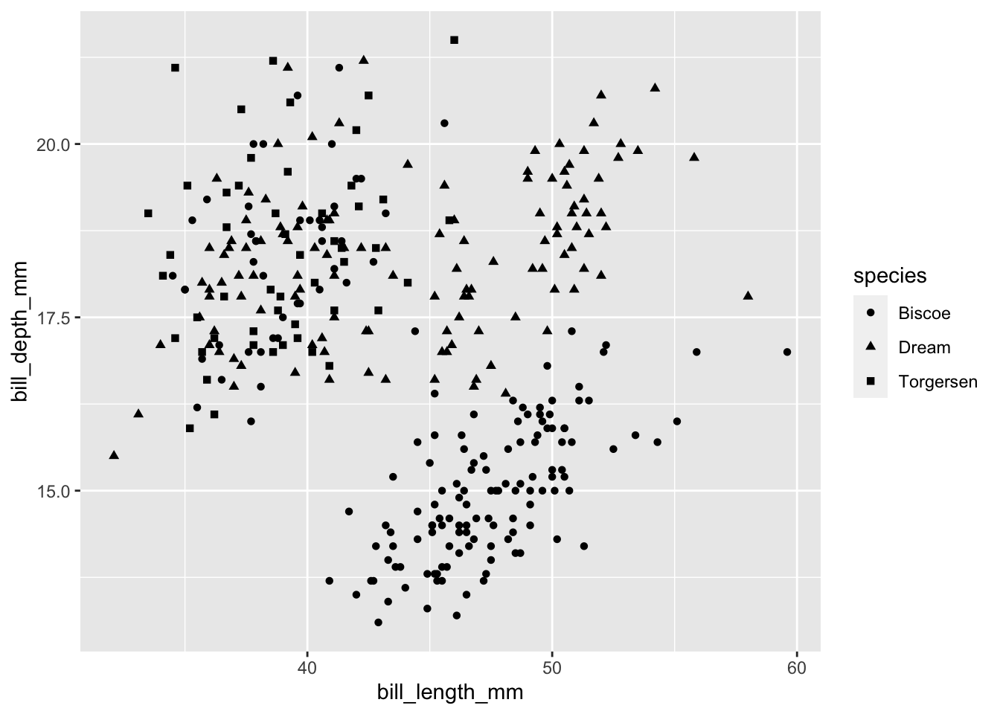
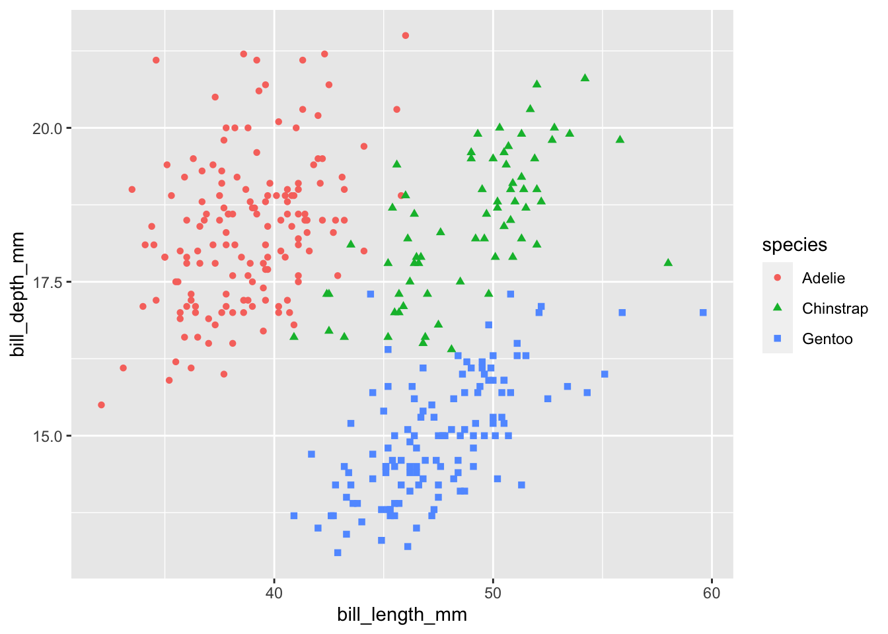

# install the R package palmerpenguins if you have not done so before
# installing it once is sufficient
install.packages("palmerpenguins")
# call the r package
library(palmerpenguins)5 Visualisations and tidyverse
Next, we will continue with data visualisation. We previously did following visualisations using base R:
- Bar plot using
barplot()(for categorical variables) - Histogram using
hist()(for numerical variables) - Boxplot using
boxplot()(for numerical variables)
When I say base R, I mean that we relied on inbuilt functions available in R. Today, we are going to introduce tidyverse, which refers to a family of packages for data wrangling, analysis, and visualisation. These packages are installed on top of R and make many tasks much easier to handle.
But first, let’s look at the data we are going to use today.
5.1 Palmer Penguins
Palmer Penguins is a dataset commonly used for learning the basics of data visualisation and management. You can learn more about the fascinating story behind this dataset here: https://apreshill.github.io/palmerpenguins-useR-2022/#/title-slide.
We need to install R package palmerpenguins to access the data.
Once you initiate the R package palmerpenguins, the dataset is accessible by just typing penguins. You can think penguins like a data frame in your enviroment.
# see penguins first five rows
head(penguins, n = 5)
#> # A tibble: 5 × 8
#> species island bill_length_mm bill_depth_mm flipper_length_mm body_mass_g
#> <fct> <fct> <dbl> <dbl> <int> <int>
#> 1 Adelie Torgersen 39.1 18.7 181 3750
#> 2 Adelie Torgersen 39.5 17.4 186 3800
#> 3 Adelie Torgersen 40.3 18 195 3250
#> 4 Adelie Torgersen NA NA NA NA
#> 5 Adelie Torgersen 36.7 19.3 193 3450
#> # ℹ 2 more variables: sex <fct>, year <int>
# class of penguins
class(penguins)
#> [1] "tbl_df" "tbl" "data.frame"Depending on your system, class(penguins) returns a tibble (tbl_df) or a data.frame. Tibble is a type of data frame used in tidyverse. We will see these shortly.
But first, let’s look at the dataset and have a sense of the variables.
# View penguins
View(penguins)# number of variables
ncol(penguins)
#> [1] 8
# number of raws
nrow(penguins)
#> [1] 344
# name of the variables
names(penguins)
#> [1] "species" "island" "bill_length_mm"
#> [4] "bill_depth_mm" "flipper_length_mm" "body_mass_g"
#> [7] "sex" "year"This dataset contains information on different types of penguins. Each observation refers to a penguin. We have information about their bill length, bill depth, flipper length, and body mass, in addition to their species, the island they are living on, their sex, and the year when the measurement was taken.
Let’s see how many different penguin species is in this dataset.
# type of penguin species
table(penguins$species)
#>
#> Adelie Chinstrap Gentoo
#> 152 68 124There are three types of penguins: Adelie, Chinstrap, Gentoo.

Similarly, you can check the island where penguins live.
# different islands
table(penguins$island)
#>
#> Biscoe Dream Torgersen
#> 168 124 52It is possible that some type of penguins live on a specific island whereas others are present in multiple islands. Let’s see if there is such a relationship. We can do a cross-tabulation.
# table with two variables:
# rows: first variable - island
# columns: second variable - species
table(penguins$island, penguins$species)
#>
#> Adelie Chinstrap Gentoo
#> Biscoe 44 0 124
#> Dream 56 68 0
#> Torgersen 52 0 0From this cross-tabulation, we can see that Adelie penguins live on all three islands where Chinstrap penguins live only on Dream Island and Gentoo lives only on Biscoe Island.
Next, let’s continue exploring the dataset by looking at bill length and depth.

# summary statistics of bill length
summary(penguins$bill_length_mm)
#> Min. 1st Qu. Median Mean 3rd Qu. Max. NA's
#> 32.10 39.23 44.45 43.92 48.50 59.60 2
# summary of bill depth
summary(penguins$bill_depth_mm)
#> Min. 1st Qu. Median Mean 3rd Qu. Max. NA's
#> 13.10 15.60 17.30 17.15 18.70 21.50 25.2 A simple scatter plot
It is quite likely that bill length and depth are closely associated. Let’s do a scatter plot and visualise both variables together. On the x-axis, I will put bill length and on the y-axis bill depth.
plot(x = penguins$bill_length_mm, y = penguins$bill_depth_mm,
xlab = "Bill Length",
ylab = "Bill Depth",
main = "Palmer Penguins Data: Bill Length and Depth")
This is plotting in base R. It is a good graph, but it will get much harder to do in R if we want to add things such as different colours for different species. For example, how to provide summary statistics of bill length by species or island? Carrying out this in base R is possible but cumbersome. Tidyverse provides a much better set of tools for easily and systematically analysing data.
5.3 Tidyverse and ggplot2
The tidyverse is an opinionated collection of R packages designed for data science. All packages share an underlying design philosophy, grammar, and data structures. - tidyverse
Tidyverse is not a single R package, but rather a set of R packages. To install and call all of them, you can rely on tidyverse as a shortcut.
# install packages
install.packages("tidyverse")# call the library
library(tidyverse)
#> ── Attaching core tidyverse packages ──────────────────────── tidyverse 2.0.0 ──
#> ✔ dplyr 1.1.3 ✔ readr 2.1.4
#> ✔ forcats 1.0.0 ✔ stringr 1.5.0
#> ✔ ggplot2 3.4.4 ✔ tibble 3.2.1
#> ✔ lubridate 1.9.3 ✔ tidyr 1.3.0
#> ✔ purrr 1.0.2
#> ── Conflicts ────────────────────────────────────────── tidyverse_conflicts() ──
#> ✖ dplyr::filter() masks stats::filter()
#> ✖ dplyr::lag() masks stats::lag()
#> ℹ Use the conflicted package (<http://conflicted.r-lib.org/>) to force all conflicts to become errors5.4 Goal: Scatter plot of bill length and depth by species
Our goal is to create the graph below. We are going to use ggplot() to achieve this, which is a package in the tidyverse family.

Creating a graph with ggplot is a step by step process. First, we start by mapping the x and y axes.
ggplot(data = penguins,
mapping = aes(x = bill_length_mm,
y = bill_depth_mm))
This creates an empty plot with our variables of interest on each axis. aes stands for aesthetic. It is called aesthetic because it is related to the appearance of the graph.
Next, we will add data points by geom_point(). Adding features to a ggplot() is a little bit strange because we use + notation, which is different to many applicaytion in base R. You can think this as a lingual peculiarity of ggplot.
ggplot(
data = penguins,
mapping = aes(x = bill_length_mm,
y = bill_depth_mm
)
) +
geom_point()
We are getting closer to our goal. Next, we need to distinguish Penguins by their species. We can show each species with a different shape. Again, we are going to use aes() because we are going to change the shape of data points according to species.
ggplot(
data = penguins,
mapping = aes(x = bill_length_mm,
y = bill_depth_mm
)
) +
geom_point(mapping = aes(shape = species))
#> Warning: Removed 2 rows containing missing values (`geom_point()`).
You might be wondering why we put aes() inside geom_point, but not the main ggplot function. Let’s try that alternative.
ggplot(
data = penguins,
mapping = aes(x = bill_length_mm,
y = bill_depth_mm,
shape = species
)
) +
geom_point()As you can see, outputs are the same for both approaches. Second approach, putting shape under the main ggplot function is called a global option, because it is defined in a higher hierarchy. Defining shape under geom_point() would be a local option, because it is defined specifically for points. The behaviour is the same because it does not matter at which level you define the shape.
Warning
Local options may override global options. For example, if you accidentally put two different shapes to aesthetics, local aes will be displayed.
ggplot(
data = penguins,
mapping = aes(x = bill_length_mm,
y = bill_depth_mm,
shape = species # shape defined as species
)
) +
geom_point(mapping = aes(shape = island)) # shape defined as island
The output has shapes by island instead of species, because local aes under geom_poit() overrides the aes() inside ggplot().
This is for demonstration purposes. In general, you should avoid putting conflicting options.
We also want to display points with different colors according to species.
ggplot(
data = penguins,
mapping = aes(x = bill_length_mm,
y = bill_depth_mm)
) +
geom_point(mapping = aes(shape = species,
color = species))
Final step is to add the labels.
ggplot(
data = penguins,
mapping = aes(x = bill_length_mm,
y = bill_depth_mm)
) +
geom_point(mapping = aes(shape = species,
color = species)
) +
labs(
title = "Bill length and bill depth",
subtitle = "Measurements for Adelie, Chinstrap, and Gentoo Penguins",
x = "Bill length (mm)",
y = "Bill depth (mm)",
color = "Penguin",
shape = "Penguin"
)5.5 Mean body mass by species
Finding the mean of body_mass_g is a straightforward task.
# mean of body mass (in grams)
mean(penguins$body_mass_g, na.rm = T)
#> [1] 4201.754What if we want to find the mean by species? Doing this in base R can be long, confusing, and cumbersome. This is exactly why our friends in R Studio created the tidyverse family. We can use it to simplify the task.
But first we need to learn the basics of tidyverse linguistics.
We usually start with a data frame in tidyverse, which is also called a tibble (tidyverse specific data frame). For example, tidyverse’s summarize() is a useful function whose purpose is to provide a summary statistic. It takes a data frame, and you can calculate the summary statistic you wish.
penguins |>
summarize(statistics_i_wish = mean(body_mass_g, na.rm = T))
#> # A tibble: 1 × 1
#> statistics_i_wish
#> <dbl>
#> 1 4202.You can use it to calculate more than one statistics.
penguins |>
summarize(mean_mass_g = mean(body_mass_g, na.rm = T),
mean_mass_kg = mean(body_mass_g, na.rm = T) / 1000,
number_of_penguins = n()
)
#> # A tibble: 1 × 3
#> mean_mass_g mean_mass_kg number_of_penguins
#> <dbl> <dbl> <int>
#> 1 4202. 4.20 344This is without any grouping. I would like to calculate the mean body mass by species. We can use group_by() available in tidyverse to group the data. We can use this jointly with summarise to get a summary statistic, such as the mean.
penguins |>
group_by(species) |>
summarize(mean_mass_g = mean(body_mass_g, na.rm = T),
mean_mass_kg = mean(body_mass_g, na.rm = T) / 1000,
number_of_penguins = n()
)
#> # A tibble: 3 × 4
#> species mean_mass_g mean_mass_kg number_of_penguins
#> <fct> <dbl> <dbl> <int>
#> 1 Adelie 3701. 3.70 152
#> 2 Chinstrap 3733. 3.73 68
#> 3 Gentoo 5076. 5.08 124The output is grouped by species as we wanted. We can now see the average mass of penguins according to different species. On average, Gentoo is the heaviest.